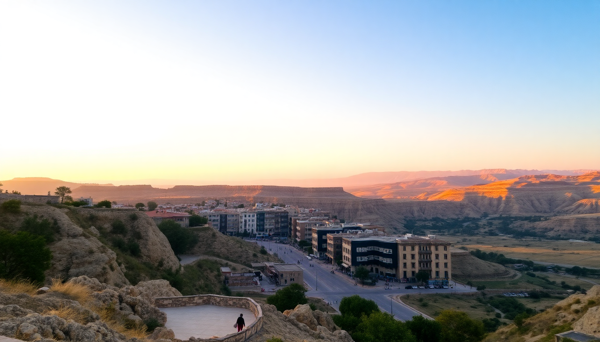

Best Time to Visit Cappadocia: A Practical Seasonal Guide

I spent a full year bouncing between Goreme and Urgup, and I’ve got a simple take: Cappadocia doesn’t have a single “perfect” month. Every season trades something — crowds for cold, heat for haze, balloon cancellations for empty trails. This guide lays out what each season actually feels like on the ground, so you can pick the window that matches your tolerance for cold, your budget, and your need for that sunrise balloon photo.
What is the weather like in Cappadocia by season?
Cappadocia sits at over 1,000 meters elevation, so it’s not the Mediterranean coast. Winters bite, summers bake, and spring and fall are short and sweet.
Spring (April to mid-June) is the sweet spot for most travelers. Days hit 15–22°C, the valleys green up after the snow, and the wildflowers around Pigeon Valley and Rose Valley are out. We hiked the full Red Valley loop in late May without breaking a sweat. The catch: April can still be muddy, and early spring has occasional rain that cancels balloon flights.
Summer (late June to August) is hot and crowded. Temps climb to 35°C by midday. The upside? Balloon flights are almost guaranteed — we flew on six consecutive mornings in July without a single cancellation. The downside: every viewpoint at sunrise is shoulder-to-shoulder, especially at the popular Lovers’ Hill and the Goreme Open Air Museum.
Autumn (September to October) is our personal favorite. The harvest season brings cooler air (18–28°C), golden light on the tuff formations, and far fewer tourists than summer. We walked through the Zelve Open Air Museum in early October and had entire rooms to ourselves.
Winter (November to March) is quiet and cold. Daytime temps hover around 0–5°C, and snow dusts the fairy chimneys — which makes for dramatic photos. But balloon cancellations are frequent (wind and snow), and many smaller cave hotels in Goreme close or operate on reduced hours.
When should I go for the best hot air balloon experience?
Balloon flights are the main event for most visitors, and the weather window for flying is narrow. Flights launch at sunrise and require calm winds and no precipitation.
Best months for balloon reliability: June through September. We flew with Butterfly Balloons in mid-August and had textbook conditions — clear sky, zero wind at launch level. The downside is the premium price (€200–€300 per person in peak season) and the crowds in the basket.
Shoulder-season trade-off: May and October still offer good odds (maybe 70–80% flight rate), but you’ll pay less and share the sky with fewer balloons. We booked a flight in late October for €150 and got a stunning flight over the Love Valley and Goreme town.
Winter warning: November through February, cancellations can hit 50% or more. If your trip is short (3 days or less) and balloons are your priority, don’t come in winter. We met a couple in January who waited four mornings and never got off the ground.
Practical tip: Fly on your first available morning, not your last. That way, if it cancels, you have buffer days. Most operators, like Royal Balloon and Voyager Balloon, let you rebook for free within your stay.
Which valleys and trails are best in each season?
The landscape changes dramatically with the seasons, and some trails are miserable in the wrong weather.
Spring and autumn: Hit the longer hikes. The Rose Valley trail from Goreme to Cavusin is 4–5 km of fairy chimneys and cave churches — we did it in early May when the almond trees were blooming. The Pigeon Valley walk from Uchisar to Goreme is another good one, especially in October when the light softens.
Summer: Start at dawn. By 9 AM, the sun is brutal on exposed trails. We hiked the Love Valley loop in July and regretted not starting at 5:30 AM. Stick to shaded routes like the Meskendir Valley or the shorter trail around the Uchisar Castle.
Winter: Stick to the Goreme Open Air Museum and the underground cities. The Derinkuyu Underground City stays a constant 13°C year-round, and it’s a solid choice when snow makes surface trails slick. We spent a cold January afternoon at Kaymakli Underground City and had the tunnels nearly to ourselves.
Year-round fail-safe: The sunset viewpoint at Lovers’ Hill in Goreme works any season. Even in December, you get the same panoramic view of the valleys — just bundle up.
Where should I stay in Cappadocia for each season?
Your base matters more than you think. Goreme is the tourist hub with the most hotels and restaurants. Urgup is quieter, with more wine bars and higher-end cave hotels. Uchisar sits on a hill with the best views but fewer dining options.
Spring/Fall (our picks): We stayed at Kelebek Special Cave Hotel in Goreme during a May trip — the terrace overlooks the entire valley, and the included breakfast spreads are generous. For a quieter autumn stay, Sacred House in Urgup is a converted mansion with a pool and a moody, antique-filled lobby.
Summer: Book early. Goreme’s popular spots like Museum Hotel and Sultan Cave Suites fill up months in advance. We snagged a last-minute room at Harman Cave Hotel in July — smaller, family-run, and the owner cooked us dinner.
Winter: Look for hotels with heating and good insulation. Cave rooms can stay damp and cold in winter. Taskonaklar in Ortahisar has fireplaces in the rooms, and we slept warm there in February. Avoid rooms labeled “stone house” unless they specify central heating.
How do crowds and prices shift throughout the year?
This is the part most guides gloss over. Crowds and costs move together, and you can save a lot by timing your visit right.
Peak season (June–August): Hotels in Goreme charge €100–€200 per night for a decent cave double. Restaurants like Dibek and Old Cappadocia have queues for dinner. Balloon flights hit €250–€300. Book everything at least two months out.
Shoulder season (April–May, September–October): Prices drop 30–40%. We paid €70 per night at Cave Inn in late September. Restaurants are walk-in friendly. Balloon flights drop to €150–€180. This is the best value window.
Off-season (November–March, excluding Christmas/New Year): Rock-bottom prices. Hotels go for €30–€50. Many restaurants close or reduce hours. We ate at Sultan’s Kitchen in Goreme in January and were the only table. Balloon flights are cheap (€100–€130) but unreliable.
Holiday spikes: Christmas and New Year’s week book out and prices jump back to summer levels. Avoid if you want bargains.
FAQ
Is Cappadocia worth visiting in winter? Yes, if you want empty trails and snow-covered fairy chimneys. But you must be flexible with balloon flights — cancellations are common. Bring thermal layers and waterproof boots. The underground cities and the Goreme Open Air Museum are still open and far less crowded.
How many days do I need in Cappadocia? We recommend 4 full days minimum. That gives you two mornings for balloon flights (buffer for cancellations), one day for the Goreme Open Air Museum and a valley hike, one day for an underground city and a pottery workshop in Avanos. Any less and you’ll rush.
What should I pack for Cappadocia? Layers, always. Even in summer, mornings at balloon launch are chilly (10–15°C). In spring and autumn, bring a midweight jacket and hiking boots. In winter, a down jacket, gloves, and a hat are non-negotiable. Sunscreen and a wide-brimmed hat matter in summer — there’s zero shade on the trails.
Conclusion
- For guaranteed balloon flights and hot weather: Visit June through August, but book everything early and expect crowds.
- For the best balance of weather, prices, and empty trails: Come in May or September–October. That’s when we’d go back.
- For budget travel and snow scenery: Winter works if you’re flexible on balloons and don’t mind cold.
- Avoid: April (muddy trails, rain) and the Christmas/New Year holiday week (peak prices, winter weather).
- Base yourself in Goreme for convenience, or Uchisar for views, or Urgup for quieter nights.